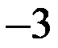
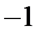

2019年北京市中考数学试题 · 选择题 第6、7、8题
6．如果 ，那么代数式
，那么代数式 的值为
的值为
（A）

（B）
（C）1（D）37．用三个不等式 ，
， ，
， 中的两个不等式作为题设，余下的一个不等式作为结论组成一个命题，组成真命题的个数为
中的两个不等式作为题设，余下的一个不等式作为结论组成一个命题，组成真命题的个数为
（A）0（B）1（C）2（D）3
8．某校共有200名学生，为了解本学期学生参加公益劳动的情况，收集了他们参加公益劳动时间（单位：小时）等数据，以下是根据数据绘制的统计图表的一部分．
人数 时间 学生类别 | 
| 
| 
| 
| 
|
性别 | 男 | 7 | 31 | 25 | 30 | 4 |
女 | 8 | 29 | 26 | 32 | 8 |
学段 | 初中 | | 25 | 36 | 44 | 11 |
高中 | | | | | |

下面有四个推断：
①这200名学生参加公益劳动时间的平均数一定在24.5-25.5之间
②这200名学生参加公益劳动时间的中位数在20-30之间
③这200名学生中的初中生参加公益劳动时间的中位数一定在20-30之间
④这200名学生中的高中生参加公益劳动时间的中位数可能在20-30之间
所有合理推断的序号是
（A）①③（B）②④
（C）①②③（D）①②③④